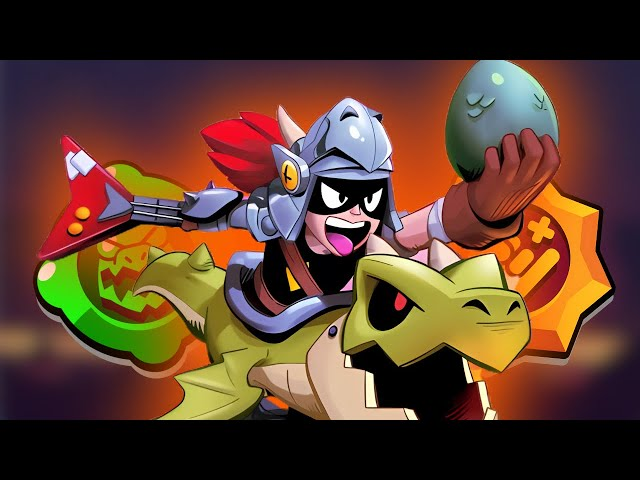

Draco

questo è uno dei 2 nuovi brawler
Draco
Draco è un combattente leggendario che ha una salute molto elevata e un danno variabile. Il suo tratto consente a Draco di caricare la sua Super dai nemici che lo danneggiano. Il suo attacco è un grande raggio di elettricità che infligge più danni a lunga distanza. Per il suo Super, salta sul suo drago gonfiabile, trasformandosi nella sua forma alternativa. La forma alternativa di Draco attacca con un flusso di fuoco continuo in un cono che infligge più danni da vicino. In questa forma ottiene anche uno scudo e un aumento di velocità.